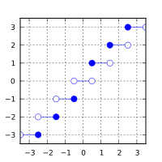

std::round, std::roundf, std::roundl, std::lround, std::lroundf, std::lroundl, std::llround, std::llroundf
来自cppreference.com
| 定义于头文件 <cmath>
|
||
| float round ( float arg ); float roundf( float arg ); |
(1) | (C++11 起) |
| double round ( double arg ); |
(2) | (C++11 起) |
| long double round ( long double arg ); long double roundl( long double arg ); |
(3) | (C++11 起) |
| double round ( IntegralType arg ); |
(4) | (C++11 起) |
| long lround ( float arg ); long lroundf( float arg ); |
(5) | (C++11 起) |
| long lround ( double arg ); |
(6) | (C++11 起) |
| long lround ( long double arg ); long lroundl( long double arg ); |
(7) | (C++11 起) |
| long lround ( IntegralType arg ); |
(8) | (C++11 起) |
| long long llround ( float arg ); long long llroundf( float arg ); |
(9) | (C++11 起) |
| long long llround ( double arg ); |
(10) | (C++11 起) |
| long long llround ( long double arg ); long long llroundl( long double arg ); |
(11) | (C++11 起) |
| long long llround ( IntegralType arg ); |
(12) | (C++11 起) |
1-3) 计算
arg 的最接近整数值（以浮点格式），中点情况舍入为远离零，无关乎当前舍入模式。5-7, 9-11) 计算
arg 的最接近整数值（以整数格式），中点情况舍入为远离零，无关乎当前舍入模式。参数
| arg | - | 浮点值 |
返回值
若不出现错误，则返回 arg 的最接近整数值，中点情况为远离零者。
返回值

参数
若出现定义域错误，则返回实现定义值。
错误处理
报告 math_errhandling 中指定的错误。
若 std::lround 或 std::llround 的结果在返回类型的可表示范围外，则可能出现定义域错误或值域错误。
若实现支持 IEEE 浮点算术（ IEC 60559 ），则
- 对于
std::round函数：
- 当前舍入模式无效。
- 若
arg为 ±∞ ，则返回不修改的参数。 - 若
arg为 ±0 ，则返回不修改的参数。 - 若
arg为 NaN ，则返回 NaN 。
- 对于
std::lround和std::llround函数：
- 决不引发 FE_INEXACT 。
- 当前舍入模式无效。
- 若
arg为 ±∞ ，则引发 FE_INVALID 并返回实现定义值。 - 若舍入结果在返回类型范围外，则引发 FE_INVALID 并返回实现定义值。
- 若
arg为 NaN ，则引发 FE_INVALID 并返回实现定义值。
注意
舍入非整数有限值时 std::round 可以（但不要求）引发 FE_INEXACT 。
所有标准浮点格式中，最大可表示浮点值均为准确的整数，故 std::round 自身决不上溢；然而在存储于整数对象时，结果可能溢出任何整数类型（包含 std::intmax_t ）。
POSIX 指定 std::lround 或 std::llround 引发 FE_INEXACT 的所有情况都是定义域错误。
std::round 的 double 版本表现为如同实现如下：
#include <cmath> #include <cfenv> #pragma STDC FENV_ACCESS ON double round(double x) { std::fenv_t save_env; std::feholdexcept(&save_env); double result = std::rint(x); if (std::fetestexcept(FE_INEXACT)) { auto const save_round = std::fegetround(); std::fesetround(FE_TOWARDZERO); result = std::rint(std::copysign(0.5 + std::fabs(x), x)); std::fesetround(save_round); } std::feupdateenv(&save_env); return result; }
示例
运行此代码
#include <iostream> #include <cmath> #include <cfenv> #include <climits> #pragma STDC FENV_ACCESS ON int main() { // round std::cout << "round(+2.3) = " << std::round(2.3) << " round(+2.5) = " << std::round(2.5) << " round(+2.7) = " << std::round(2.7) << '\n' << "round(-2.3) = " << std::round(-2.3) << " round(-2.5) = " << std::round(-2.5) << " round(-2.7) = " << std::round(-2.7) << '\n'; std::cout << "round(-0.0) = " << std::round(-0.0) << '\n' << "round(-Inf) = " << std::round(-INFINITY) << '\n'; // lround std::cout << "lround(+2.3) = " << std::lround(2.3) << " lround(+2.5) = " << std::lround(2.5) << " lround(+2.7) = " << std::lround(2.7) << '\n' << "lround(-2.3) = " << std::lround(-2.3) << " lround(-2.5) = " << std::lround(-2.5) << " lround(-2.7) = " << std::lround(-2.7) << '\n'; std::cout << "lround(-0.0) = " << std::lround(-0.0) << '\n' << "lround(-Inf) = " << std::lround(-INFINITY) << '\n'; // 错误处理 std::feclearexcept(FE_ALL_EXCEPT); std::cout << "std::lround(LONG_MAX+1.5) = " << std::lround(LONG_MAX+1.5) << '\n'; if (std::fetestexcept(FE_INVALID)) std::cout << " FE_INVALID was raised\n"; }
可能的输出：
round(+2.3) = 2 round(+2.5) = 3 round(+2.7) = 3
round(-2.3) = -2 round(-2.5) = -3 round(-2.7) = -3
round(-0.0) = -0
round(-Inf) = -inf
lround(+2.3) = 2 lround(+2.5) = 3 lround(+2.7) = 3
lround(-2.3) = -2 lround(-2.5) = -3 lround(-2.7) = -3
lround(-0.0) = 0
lround(-Inf) = -9223372036854775808
std::lround(LONG_MAX+1.5) = -9223372036854775808
FE_INVALID was raised参阅
| (C++11)(C++11) |
不大于给定值的最接近整数 (函数) |
| (C++11)(C++11) |
不小于给定值的最接近整数值 (函数) |
| (C++11)(C++11)(C++11) |
绝对值不大于给定值的最接近整数 (函数) |